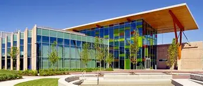
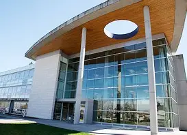

Tech Campus ↔ Surrey Main Campus
This route connects the Tech Campus with Surrey Main Campus, offering a convenient, affordable, and eco-friendly carpool option for students.
Whether you’re heading to classes, workshops, or campus events, RideShare KPU makes your commute smoother.

Tech Campus

Surrey Main Campus
Why Choose This Route?
- Cost Savings: Split gas and parking expenses with fellow students.
- Time Efficiency: Save time commuting with carpool lanes and fewer parking hassles.
- Community: Meet other students attending trades and tech programs.
- Environmentally Friendly: Reduce your carbon footprint by sharing rides.
Typical Commute Info
The drive between Tech Campus and Surrey Main Campus usually takes around 15-25 minutes depending on traffic conditions.
Carpooling can make your trip more relaxing and less stressful.
How to Get Started
- Create a free RideShare KPU account with your student email.
- Search for rides or post your own commute for Tech ↔ Surrey.
- Connect securely with verified KPU students.
- Arrange pickup times and locations easily via the platform.
- Enjoy your ride and save money!
Ready to Ride Tech ↔ Surrey?
Join the RideShare KPU community today and start sharing rides!
Join Now